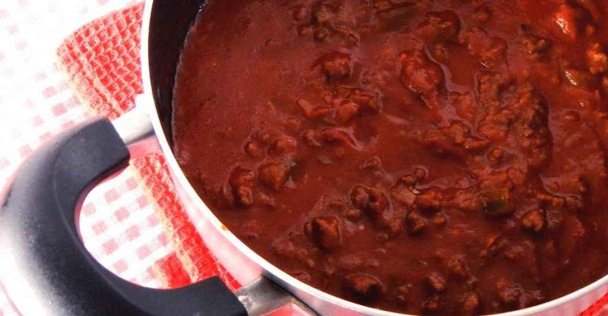
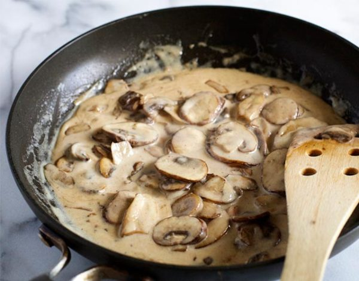
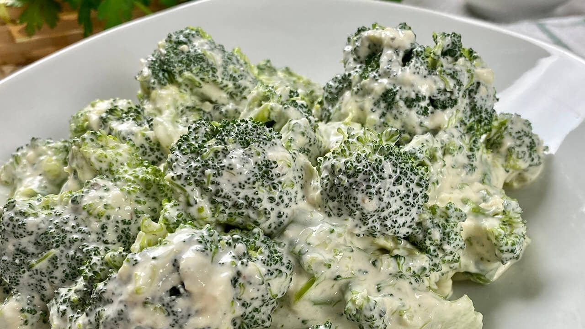

Fileto
- 500 ml de puré de tomate
- 2 dientes de ajo
- Aceite de oliva c/n
- Sal c/n
- Pimienta c/n
- Pimentón c/n
Ingredientes
- Qué salsa noble!
- Picá el ajo y rehogalo por un minuto en aceite de oliva.
- Antes de que se dore agregar el puré de tomate con la sal, la pimienta y el pimentón y cocinar por 20 minutos a fuego lento.
- Podés agregarle un poco de albahaca picada.
Paso a paso
Salsa blanca

- 600 ml de leche
- 60 gr de harina 0000
- 60 gr de manteca
- Nuez moscada c/n
- Sal c/n
- Pimienta c/n
Ingredientes
- Derretir la manteca y agregar la harina.
- Batir hasta que se integre y que la harina tome color.
- Agregar de a poco la leche revolviendo siempre.
- Condimentar a gusto.
Paso a paso
Champiñones
- 1 cebolla de verdeo
- 1 cebolla
- Crema c/n
- Manteca c/n
- Sal c/n
- Pimienta c/n
Ingredientes
- Picar y rehogar las cebollas en manteca.
- Lavar, cortar y agregar los hongos cuando las cebollas estén transparentes.
- Cuando se dore agregar la crema y el condimento y hervir por unos minutos.
Paso a paso
Verduras
- 400 gr de la verdura que tengas más al alcance
- 1 cebolla
- ½ diente de ajo
- Aceite c/n
- Sal c/n
- Pimienta c/n
Verduras
- Comenzar rehogando cebolla y ajo picado.
- Agregar las verduras.
- Aprovechar esta idea para cuando sobran verduras en tu heladera.
- Puede ser brócoli, acelga, tomates, zapallitos, calabaza, lo que sea!
- Condimentar a elección y acompañar con alguna pasta corta.
- También podés usar esta idea con verduras frías que no necesiten cocción y hacer ensaladas con pastas.